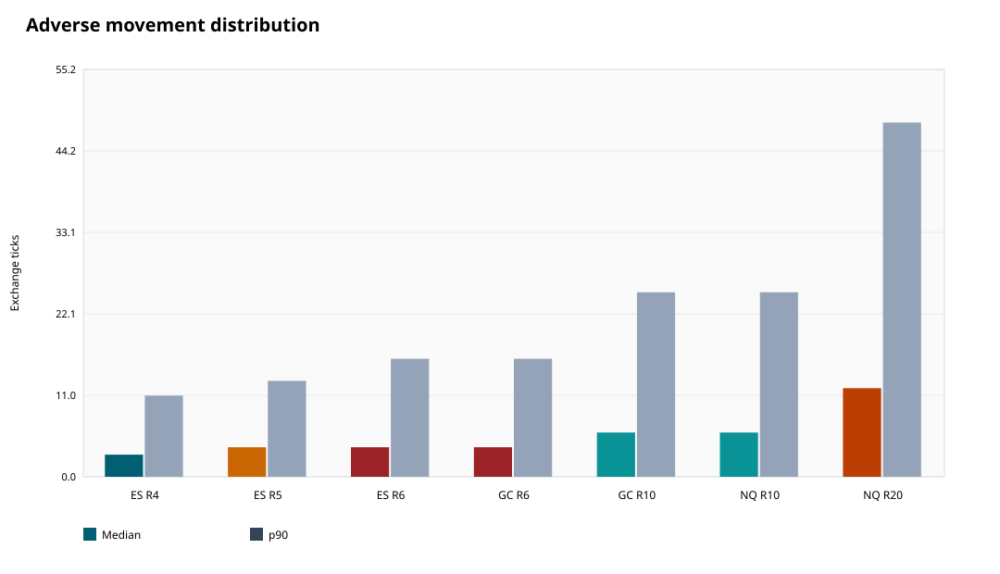
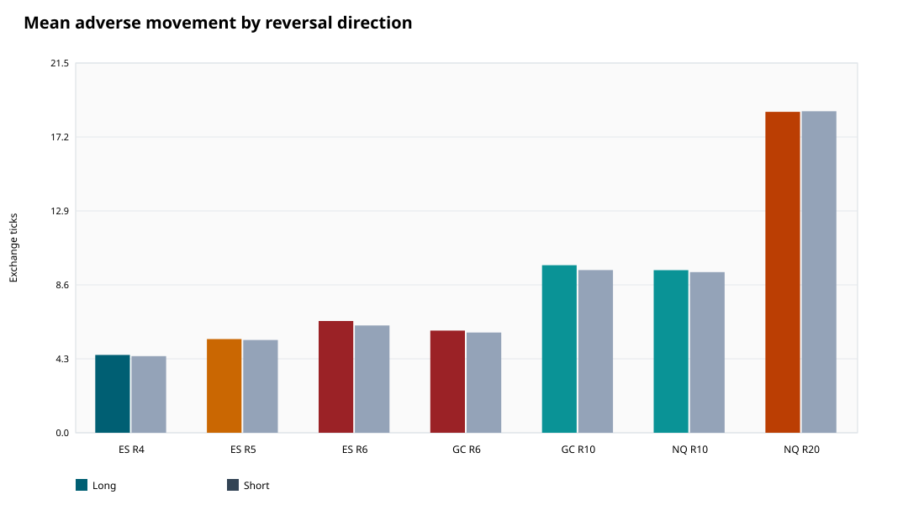
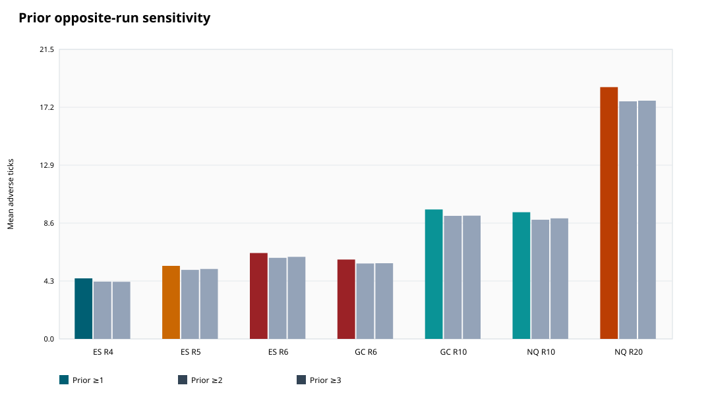
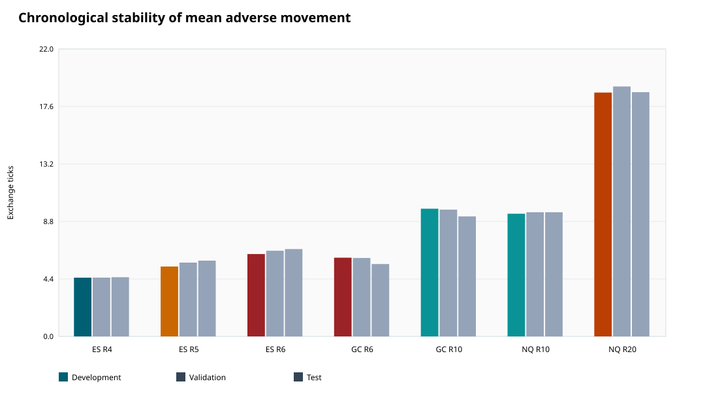

Mean adverse movement

Conditional bar-geometry analysis; not an executable strategy or profit estimate.
| asset | range_setting | total_reversals | same_direction_next_bar | same_direction_probability | mean_adverse_ticks | mean_adverse_ci_low_ticks | mean_adverse_ci_high_ticks | median_adverse_ticks | p90_adverse_ticks | mean_adverse_price | mean_adverse_gross_dollars |
|---|---|---|---|---|---|---|---|---|---|---|---|
| ES | 4 | 16771 | 12624 | 0.755 | 4.493 | 4.415 | 4.567 | 3.000 | 11.000 | 1.123 | 56.158 |
| ES | 5 | 11540 | 8689 | 0.755 | 5.425 | 5.310 | 5.550 | 4.000 | 13.000 | 1.356 | 67.808 |
| ES | 6 | 8425 | 6239 | 0.743 | 6.373 | 6.233 | 6.502 | 4.000 | 16.000 | 1.593 | 79.664 |
| GC | 6 | 47019 | 35666 | 0.759 | 5.889 | 5.769 | 6.012 | 4.000 | 16.000 | 0.589 | 58.891 |
| GC | 10 | 20603 | 15627 | 0.760 | 9.607 | 9.402 | 9.828 | 6.000 | 25.000 | 0.961 | 96.070 |
| NQ | 10 | 128421 | 97350 | 0.758 | 9.404 | 9.320 | 9.499 | 6.000 | 25.000 | 2.351 | 47.022 |
| NQ | 20 | 38909 | 29416 | 0.757 | 18.691 | 18.438 | 18.926 | 12.000 | 48.000 | 4.673 | 93.455 |




# Adverse movement of the second same-direction candle Run `20260906T_full_v1`. This analysis covers all seven available filename-labeled Range XV exports: ES 4/5/6, GC 6/10, and NQ 10/20. ## Definition The reversal is the first green/red candle after the opposite run. The immediately following candle is the **second same-direction candle including the reversal**. Results condition on that candle also closing in the reversal direction. The primary adverse movement is measured from that follow-through candle's own open: open-to-low for green/long and high-to-open for red/short. ## Full-period results | Chart | Reversals | Same-direction second candle | Conditional rate | Mean adverse ticks (95% block CI) | Median | p90 | Mean adverse price | Mean adverse gross $ | |---|---:|---:|---:|---:|---:|---:|---:|---:| | ES R4 | 16,771 | 12,624 | 75.46% | 4.49 (4.42–4.57) | 3.0 | 11.0 | 1.12 | $56.16 | | ES R5 | 11,540 | 8,689 | 75.52% | 5.42 (5.31–5.55) | 4.0 | 13.0 | 1.36 | $67.81 | | ES R6 | 8,425 | 6,239 | 74.30% | 6.37 (6.23–6.50) | 4.0 | 16.0 | 1.59 | $79.66 | | GC R6 | 47,019 | 35,666 | 75.91% | 5.89 (5.77–6.01) | 4.0 | 16.0 | 0.59 | $58.89 | | GC R10 | 20,603 | 15,627 | 75.97% | 9.61 (9.40–9.83) | 6.0 | 25.0 | 0.96 | $96.07 | | NQ R10 | 128,421 | 97,350 | 75.83% | 9.40 (9.32–9.50) | 6.0 | 25.0 | 2.35 | $47.02 | | NQ R20 | 38,909 | 29,416 | 75.67% | 18.69 (18.44–18.93) | 12.0 | 48.0 | 4.67 | $93.45 | The denominator for mean adverse movement is the number of same-direction second candles, not all reversals. The conditional rate column shows how frequently a reversal reached that cohort. Confidence intervals resample provisional export dates and account for within-date dependence. ## Chart-level summary - **ES R4:** mean adverse movement was 4.49 ticks (1.12 native price units; $56.16 gross), with median 3.0 and p90 11.0 ticks. The next candle closed in the reversal direction in 75.46% of eligible reversals (12,624/16,730). - **ES R5:** mean adverse movement was 5.42 ticks (1.36 native price units; $67.81 gross), with median 4.0 and p90 13.0 ticks. The next candle closed in the reversal direction in 75.52% of eligible reversals (8,689/11,505). - **ES R6:** mean adverse movement was 6.37 ticks (1.59 native price units; $79.66 gross), with median 4.0 and p90 16.0 ticks. The next candle closed in the reversal direction in 74.30% of eligible reversals (6,239/8,397). - **GC R6:** mean adverse movement was 5.89 ticks (0.59 native price units; $58.89 gross), with median 4.0 and p90 16.0 ticks. The next candle closed in the reversal direction in 75.91% of eligible reversals (35,666/46,984). - **GC R10:** mean adverse movement was 9.61 ticks (0.96 native price units; $96.07 gross), with median 6.0 and p90 25.0 ticks. The next candle closed in the reversal direction in 75.97% of eligible reversals (15,627/20,569). - **NQ R10:** mean adverse movement was 9.40 ticks (2.35 native price units; $47.02 gross), with median 6.0 and p90 25.0 ticks. The next candle closed in the reversal direction in 75.83% of eligible reversals (97,350/128,384). - **NQ R20:** mean adverse movement was 18.69 ticks (4.67 native price units; $93.45 gross), with median 12.0 and p90 48.0 ticks. The next candle closed in the reversal direction in 75.67% of eligible reversals (29,416/38,874). ## Interpretation Larger range settings generally allow larger adverse movement inside the second candle. The result should therefore be compared in ticks, native price, and dollars—not raw points across assets. The separate long/short table checks directional symmetry, and the prior-run table shows whether the three-opposite-candle example differs from the all-reversal cohort. This is a conditional bar-geometry estimate. Selecting only second candles that ultimately close in the reversal direction uses their close to define the cohort; it is not a real-time entry filter and does not establish profitability. The signal-close sensitivity can differ from the own-open result because Range XV bars may open away from the reversal close. ## Outputs - [All summary slices](tables/all_summary.csv) - [Headline all-reversal results](tables/headline.csv) - [Long and short results](tables/long_short.csv) - [Prior-run sensitivity](tables/prior_run_sensitivity.csv) - [Chronological stability](tables/chronological_stability.csv) - [Independent real-event reconciliation](tables/manual_reconciliation.csv) - [Methodology](methodology.md) - [Data quality](data_quality.md) - [Run manifest](run_manifest.json) Figures: [mean adverse movement](figures/mean_adverse.svg), [median and p90](figures/adverse_distribution.svg), [long versus short](figures/long_short.svg), [prior-run sensitivity](figures/prior_run_sensitivity.svg), and [chronological stability](figures/chronological_stability.svg).